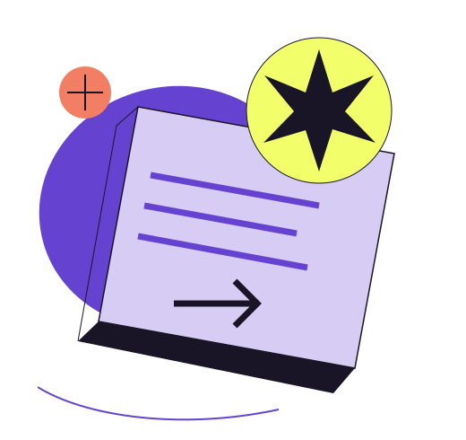

Start with a question.
Interesting work begins with noticing. Bring a question you can't quite leave alone.
NO STRAIGHT LINES. JUST NEW DIRECTIONS.
A playground for the things
you haven't tried. Yet.

MAKE01 / THE EXPLORATION MENU
Mix disciplines. Make room for a wildcard.
Build a sample week from our fictional
course catalogue.
02 / MAKE IT YOURS
Choose up to four courses. We’ll spot timetable clashes as you build.
Sample timetable only. No enrolment, qualification or academic credit is offered.
Your week is a blank canvas. Add a course to begin.
03 / NOTES FROM AN OPEN MIND
Interesting work begins with noticing. Bring a question you can't quite leave alone.
A design learner in a coding room. A storyteller in a systems lab. New angles create new ideas.
Build a prototype, draw a map, write a paragraph. Let the work become a way to think.
WHAT COULD YOUR
NEXT CHAPTER LOOK LIKE?